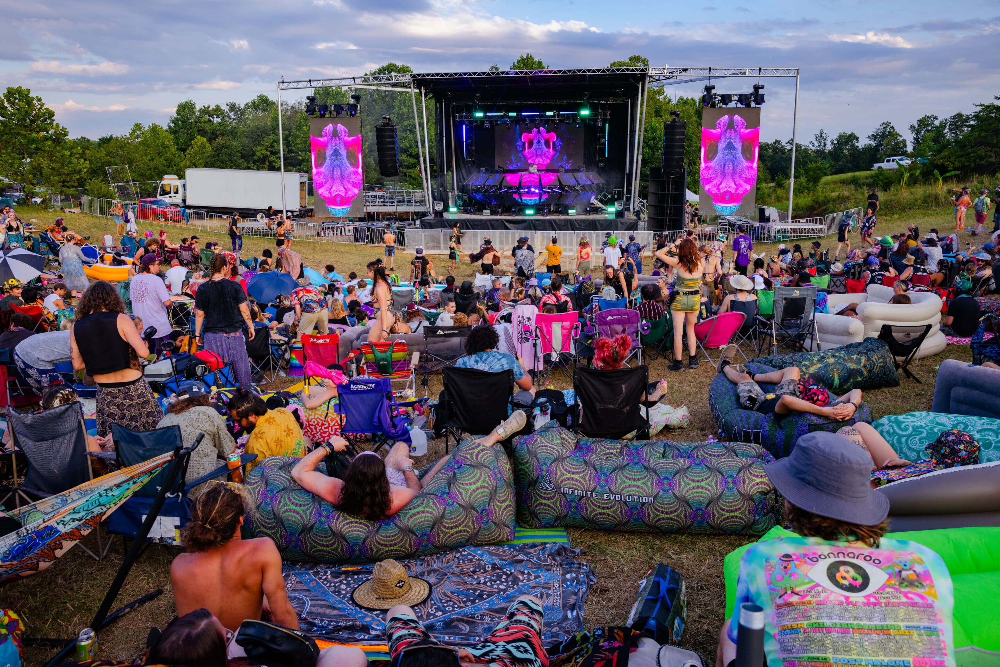
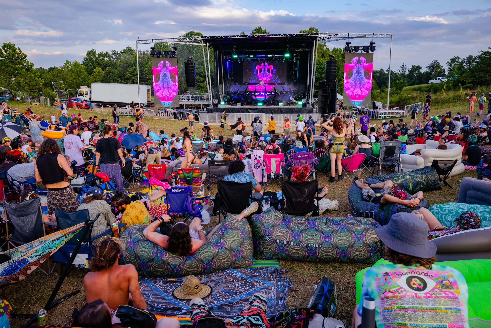

For music lovers, if they wanted to see their favorite musician live, concerts are a great experience. Afterall, it creates a connection between the Musicians and the audience in a way that doesn't compare when just listening to a studio album. Now imagine if someone decided to take a whole 3-4 days off to camp out at a concert of multiple musicians. It no longer becomes just seeing the music live but an endurance test. See how long you can last until you're like "Ok, I'm ready to go home."
The most important part is knowing what to bring. Most festivals will give you a list on their site of what you can and cannot bring, however there are some necessities that are a must-have in all Festival experiences.
When going to these types of festivals, there are usually three areas that is in every festival. You have the Campsite, which is where you will consider your home for the time you're there. Then there is Shakedown Street, a term first used by the Grateful Dead, where you will find Vendors selling merch and supplies. And most importantly, the Stage area, where the music is being played. Depending on how big the festival is, there can be significant number of these types of areas all around.
>One last thing I want to add is the community that exists solely because these festivals exist. That community are called Wooks, and they are a group that are rooted from the hippie movement. They are the true festival-goers.
 
